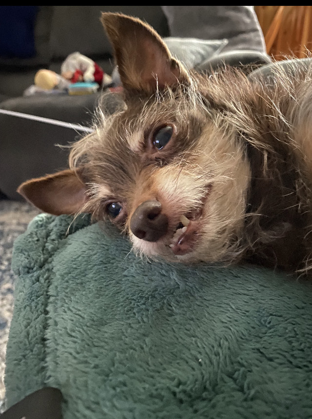

About Me
I am a young programmer who just graduated high school and would like to get some experience in places other than school. This website is something that I've had fun making and wish to improve at doing in the future.
About the Website
This website is a project from my first class at BitWise! It is about common dog breeds and normal things people would like to know about a dog breed.
About My Own Dog

I am not able to talk enough about my own dog. He's been my friend all the way since I was 6 years old. Now he is becoming an old dog, turning 12 in August 2022, but I feel like he is still very energetic for his age. His breed is a mix between 3 different breeds. He is part chihuahua, minicher pincher, and poodle. My family sometimes gives him the nickname of "rat" because he resembles the master of the teenage mutant ninja turtles. His real name is J-Dog, which I gave him the name from a show I used to watch as a kid, where a dog's name was T-Dog. Since I go by "TJ" it only made sense to me to give him the other letter being J. He is where my love for facts and information about dogs come from, and where I got the inspiration to make this website about dog breeds.